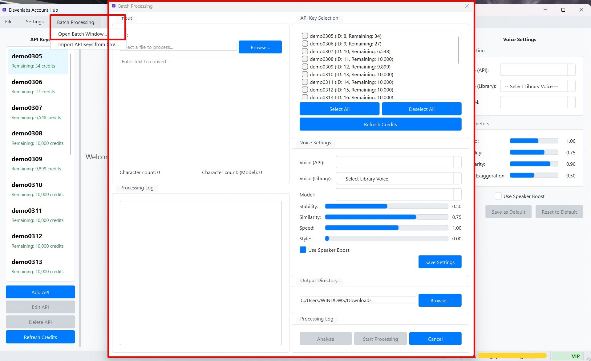

Cách sử dụng Tính năng Xử lý Hàng loạt (Batch Processing)
Cửa sổ Xử lý Hàng loạt (Batch Processing) của ElevenLabs Account Hub được thiết kế để bạn có thể dễ dàng thiết lập và chạy các tác vụ tạo giọng nói cho nhiều đoạn văn bản hoặc nhiều tệp một cách tự động. Dưới đây là hướng dẫn chi tiết các bước để sử dụng tính năng này:
1. Mở Cửa sổ Xử lý Hàng loạt
Để bắt đầu, bạn cần mở cửa sổ Xử lý Hàng loạt từ giao diện chính của phần mềm:
- Trên Thanh Menu, chọn "Batch Processing".
- Từ menu con xổ xuống, chọn "Mở Cửa sổ Xử lý Hàng loạt" (Open Batch Processing Window).
Sau khi chọn, cửa sổ "Batch Text-to-Speech Processing" sẽ xuất hiện. Đây là nơi bạn sẽ thực hiện tất cả các thao tác liên quan đến xử lý hàng loạt.
 (Hình ảnh: Giao diện tổng quan của cửa sổ Xử lý Hàng loạt)2. Chuẩn bị Dữ liệu Văn bản Đầu vào
Bạn có hai phương thức chính để cung cấp các đoạn văn bản cần chuyển đổi thành giọng nói:
a. Nhập Trực tiếp vào Bảng (Add Task Manually)
- Trong cửa sổ Xử lý Hàng loạt, tìm đến bảng "Danh sách Tác vụ" (Task List).
- Nhấn nút "Thêm Tác vụ" (Add Task).
- Một hàng mới sẽ được thêm vào cuối bảng. Bạn có thể nhấp đúp vào ô trong cột "Văn bản" (Text) của hàng mới này để nhập hoặc dán trực tiếp đoạn văn bản bạn muốn xử lý.
- Lặp lại bước này để thêm nhiều đoạn văn bản khác nhau, mỗi đoạn sẽ là một tác vụ riêng biệt trong lô.
b. Nhập từ Tệp (Import from Files)
Đây là cách hiệu quả nếu bạn có nhiều văn bản được lưu trong các tệp riêng biệt.
- Nhấn nút "Nhập từ Tệp" (Import from Files).
- Một hộp thoại chọn tệp của hệ điều hành sẽ xuất hiện.
- Duyệt đến thư mục chứa các tệp văn bản của bạn. Bạn có thể chọn một hoặc nhiều tệp cùng lúc (ví dụ: các tệp
.txt).Định dạng tệp được hỗ trợ: Hiện tại, phần mềm hỗ trợ tốt nhất cho các tệp văn bản thuần túy (.txt). Mỗi dòng trong tệp.txtthường sẽ được coi là một tác vụ TTS riêng biệt. Hỗ trợ cho các định dạng khác như.srt(phụ đề) có thể được thêm vào trong các phiên bản tương lai. - Sau khi chọn các tệp và nhấn "Open", nội dung từ các tệp đó sẽ được phân tích và thêm vào bảng "Danh sách Tác vụ".
3. Cấu hình Các Thông số TTS cho Lô Xử lý
Sau khi đã có danh sách các tác vụ văn bản, bạn cần cấu hình các cài đặt Text-to-Speech sẽ được áp dụng cho toàn bộ lô. Các cài đặt này thường nằm trong một khu vực riêng biệt trên cửa sổ Xử lý Hàng loạt, ví dụ như "Cài đặt Chung cho Lô" (Batch Settings).
a. Lựa chọn Khóa API (API Key Selection Strategy)
- Sử dụng một Khóa API cố định:
- Trong phần cài đặt, bạn sẽ thấy một danh sách thả xuống "Chọn Khóa API" (Select API Key).
- Chọn một Khóa API cụ thể từ danh sách này. Tất cả các tác vụ trong lô sẽ được thực hiện bằng Khóa API này.
- Nếu khóa này hết tín dụng giữa chừng, quá trình xử lý có thể bị dừng hoặc các tác vụ còn lại sẽ thất bại.
- Tự động Luân chuyển Khóa API (Auto-rotate API Keys):
- Đánh dấu vào ô tùy chọn "Tự động luân chuyển Khóa API khi hết credit" (Auto-rotate API Key on credit exhaustion).
- Khi tùy chọn này được bật, phần mềm sẽ tự động chọn các Khóa API từ danh sách các khóa bạn đã thêm vào ứng dụng (trong cửa sổ chính). Nó sẽ ưu tiên các khóa còn nhiều tín dụng.
- Nếu một Khóa API đang sử dụng hết tín dụng trong quá trình xử lý lô, phần mềm sẽ tự động chuyển sang sử dụng một Khóa API khác còn tín dụng để tiếp tục các tác vụ còn lại.
- Mẹo: Đây là tính năng cực kỳ hữu ích để tối đa hóa việc sử dụng tín dụng từ nhiều tài khoản ElevenLabs miễn phí hoặc các tài khoản có giới hạn tín dụng nhỏ.
b. Cài đặt Giọng nói (Voice) và Mô hình (Model)
Bạn cần chọn giọng nói và mô hình AI sẽ được sử dụng cho tất cả các tác vụ trong lô:
- Giọng nói (Voice): Chọn một giọng nói từ danh sách thả xuống. Danh sách này có thể bao gồm các giọng nói từ Khóa API được chọn (nếu bạn chọn một khóa cố định) hoặc một danh sách tổng hợp nếu bạn sử dụng chế độ luân chuyển. Bạn cũng có thể chọn giọng nói từ Thư viện Cục bộ.
- Mô hình (Model): Chọn mô hình AI của ElevenLabs (ví dụ:
eleven_multilingual_v2).
c. Tùy chỉnh các Tham số TTS Khác
Tương tự như khi tạo TTS đơn lẻ, bạn có thể điều chỉnh các thanh trượt cho Tốc độ (Speed), Độ ổn định (Stability), Độ tương đồng (Similarity Boost), và Kiểu cách (Style). Các cài đặt này sẽ được áp dụng đồng nhất cho tất cả các tác vụ trong lô.
Đánh dấu hoặc bỏ đánh dấu ô Speaker Boost nếu cần.
d. Cấu hình Proxy và Độ trễ (Delay)
- Sử dụng Proxy Pool: Đánh dấu vào ô "Sử dụng Proxy Pool" nếu bạn muốn các yêu cầu API trong lô này được thực hiện thông qua các proxy trong Proxy Pool Chung của bạn. Điều này giúp tăng cường khả năng luân chuyển IP.
- Delay giữa các yêu cầu (Delay between requests):
- Thiết lập khoảng thời gian trễ (tính bằng giây, ví dụ: từ 1 đến 5 giây) giữa mỗi lần gọi API tạo giọng nói.
- Có thể có tùy chọn "Delay Ngẫu nhiên" (Random Delay) trong một khoảng (ví dụ: từ 2 đến 7 giây). Việc này giúp các yêu cầu trông tự nhiên hơn và giảm nguy cơ bị hệ thống của ElevenLabs phát hiện là hoạt động bot.
4. Chọn Thư mục Lưu trữ Đầu ra
- Trước khi bắt đầu xử lý, bạn cần chỉ định thư mục trên máy tính nơi các tệp âm thanh được tạo ra sẽ được lưu.
- Nhấn nút "Chọn Thư mục Lưu" (Select Output Folder).
- Một hộp thoại sẽ xuất hiện, cho phép bạn duyệt và chọn thư mục mong muốn.
5. Bắt đầu và Theo dõi Quá trình Xử lý
- Sau khi đã hoàn tất việc chuẩn bị dữ liệu đầu vào và cấu hình các thông số, nhấn nút "Bắt đầu Xử lý" (Start Batch Processing).
- Phần mềm sẽ bắt đầu thực hiện từng tác vụ trong "Danh sách Tác vụ" theo thứ tự.
- Theo dõi Tiến trình:
- Cột "Trạng thái" (Status) trong bảng sẽ cập nhật cho từng tác vụ: "Đang chờ" (Pending), "Đang xử lý" (Processing), "Hoàn thành" (Completed), "Lỗi" (Error).
- Nếu thành công, cột "Tệp Đầu ra" (Output File) sẽ hiển thị tên tệp âm thanh đã được tạo và lưu.
- Các thông tin khác như "Thời lượng" (Duration), "Tín dụng Sử dụng" (Credits Used) cũng sẽ được cập nhật.
- Một thanh tiến trình tổng thể cho toàn bộ lô có thể được hiển thị.
- Dừng Xử lý: Trong quá trình xử lý, nút "Bắt đầu Xử lý" sẽ chuyển thành "Dừng Xử lý" (Stop Processing). Bạn có thể nhấn nút này bất cứ lúc nào để tạm dừng hoặc hủy bỏ toàn bộ lô tác vụ đang chạy.
6. Xem Kết quả và Quản lý các Tệp Âm thanh
- Sau khi quá trình xử lý hoàn tất (hoặc được dừng), tất cả các tệp âm thanh đã được tạo thành công sẽ nằm trong thư mục lưu trữ bạn đã chọn ở Bước 4.
- Bảng "Danh sách Tác vụ" sẽ cung cấp một bản tóm tắt về kết quả của mỗi tác vụ.
- Bạn có thể có các tùy chọn để mở nhanh thư mục chứa tệp, nghe lại tệp, hoặc xóa các mục đã xử lý khỏi danh sách (tùy thuộc vào các nút chức năng được cung cấp trong cửa sổ Xử lý Hàng loạt).
- Quá trình xử lý hàng loạt có thể mất nhiều thời gian, tùy thuộc vào số lượng và độ dài của các tác vụ, tốc độ của API ElevenLabs, chất lượng kết nối mạng và proxy (nếu sử dụng).
- Nếu gặp lỗi với một tác vụ cụ thể, thông tin lỗi thường sẽ được hiển thị trong cột "Trạng thái" hoặc một khu vực thông báo riêng.